Star Wars is one of the biggest and most successful franchises ever made. With the Original trilogy that started back in 1977 and ending in 1983. These three movies were so massive that there had to be more to come. So in 1999 they started the prequel trilogy. I wanted to see what sort of similarities and differences you can find in these two triogies. Did George Lucas ever change how he wrote?
You can find the documents that I used here. I got these texts from the website imsdb.com by searching for each movie individually.
To begin comparing the two I put all six of the scripts into a program called AntConc. Then I put them under an N-Gram which takes a look at how many times a specific set of words are used. I set them all to a 3 N-Gram.
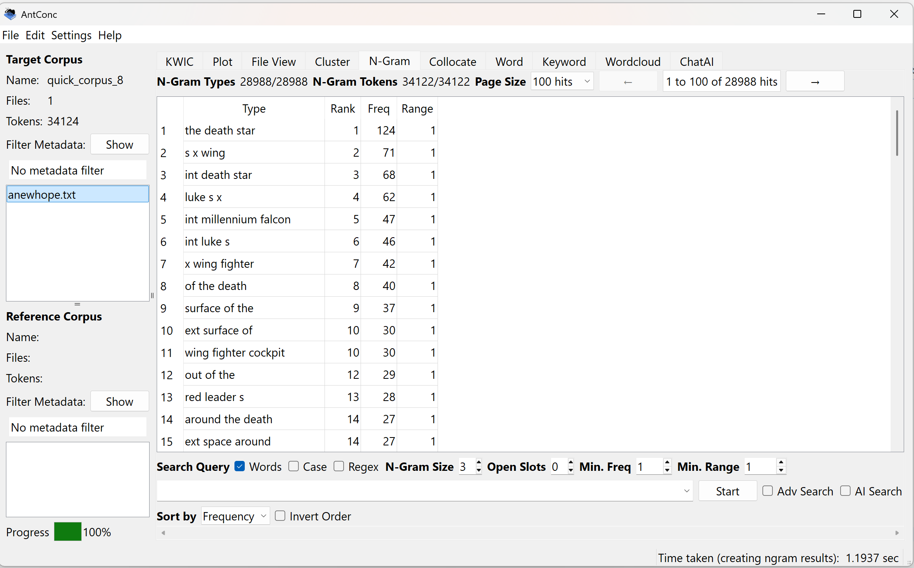
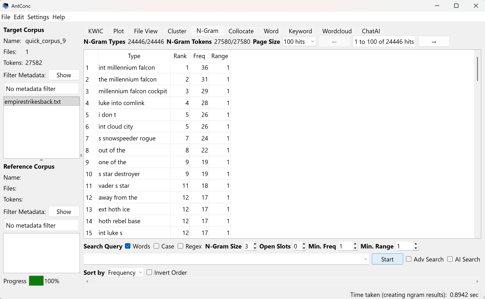
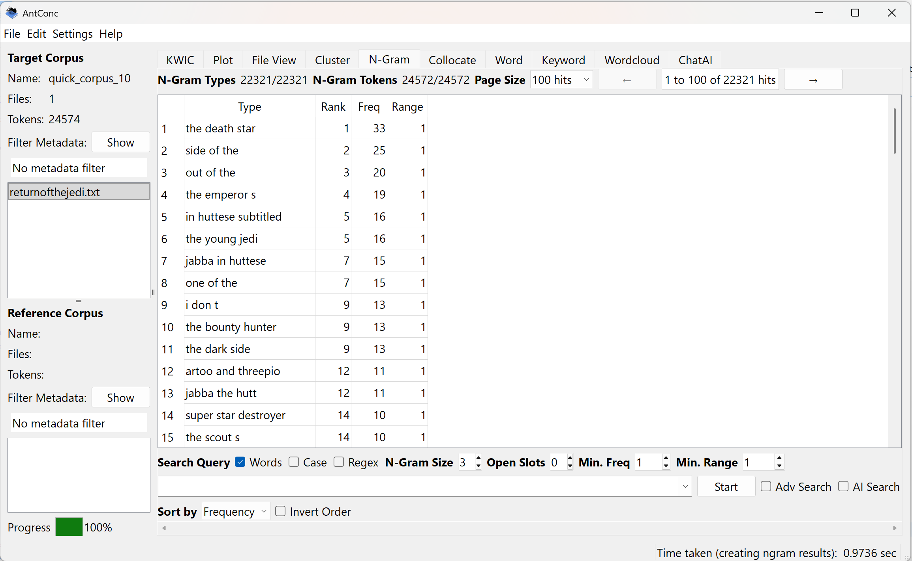
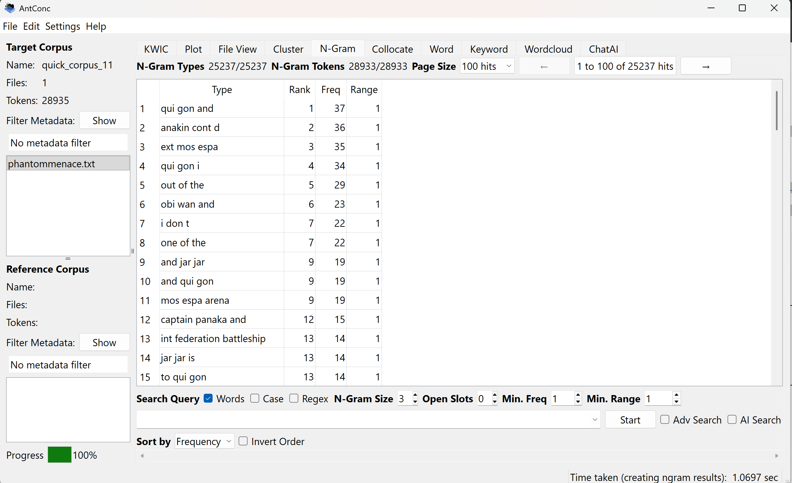
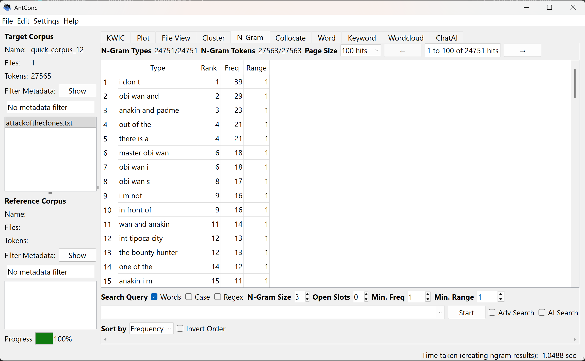
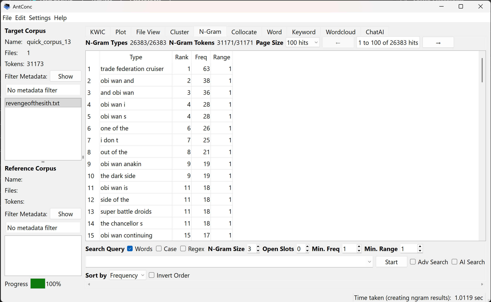
One of the biggest differences between the two trilogies that you can just see from these N-Grams is the different character names and the locations. The Original Trilogy features lots of representations of Luke skywalker, Darth Vader, the Death Star, Hoth, ect. While the Prequel Trilogy has more mentions of Anakin, Obi Wan, Padme, Trade Federation Cruiser, ect. These differences are what I would expect considering these trilogies take place in different worlds and have different main characters.
The biggest similarity between all of the movies seen through these N-Grams in the repeating of the phrase "out of the." This would make sense in the world of Star Wars because there are a lot of things that can come out of other things. Lazers come out of blasters, ships come out of hangers, and people come out of buildings. Another reason why this is frequently used is because of the fact that these are scripts for movies. The term can be used as stage directions so the actors know what they are doing.
Is there any conclusions we can make off of just this level of N-Gram? Not really no. You can maybe say that there's a similar style of writing with the fact that there is a heavy use of character names throughout all of them. But I don't think there is that much we can pull from just this alone.
So to dive a little deaper lets to a 3 N-Gram of all six movies.
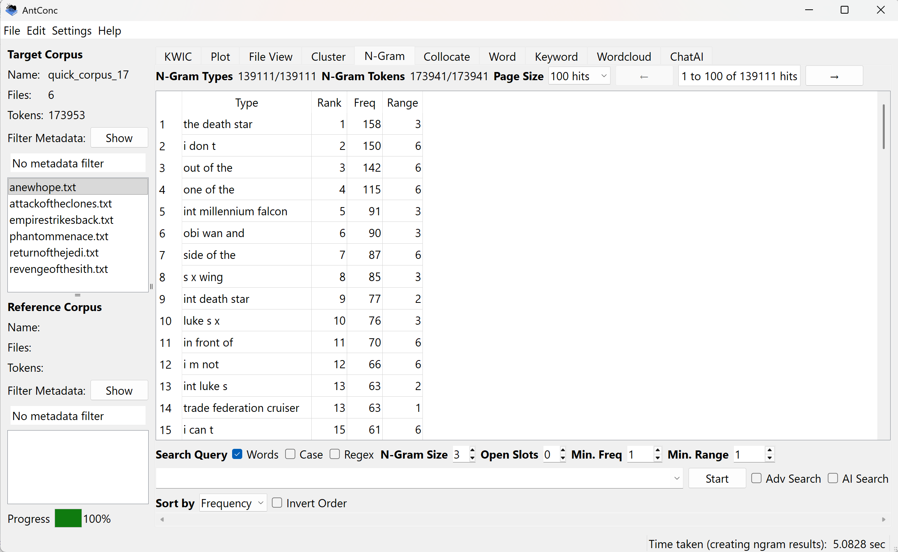
Now here we can see some things that we could maybe take a look at. The Death Star being number one does not surprise me considering it is the focus of two whole movies and is referenced in the rest of them besides The Phantom Menace. The same can also be said about the Millennium Falcon and Lukes X Wing. One thing I do notice about that is that there is a lack of any places or ships from the Prequel Trilogy. You can see that the only one mentioned is the Trade Federation Cruiser and that is only mentioned in Revenge of the Sith due to it being where the opening scene takes place. From this I can tell that there is at least a slight bit of change in the way George wrote his Prequel Trilogy. The complete lack of one ship that everyone knows and loves like there was in the originals tells me that he might have wanted to be more creative with it rather getting tied down to one idea. Or his budget was significantly higher and he wanted to spend it on a bunch of cool looking ships.
Again we can see the phrase "out of the" being one of the top ones but I want to focus on the phrase "one of the." In the individual 3 N-Grams you might not have even noticed it being in every list because it was always at the bottom, but now it's all the way at the top. When looking into where all of these come from you can see that "one of the" can refer to many different things thoughout all of the movies. It often refers to objects and background characters that maybe will maybe do something that the other ones around it are not doing. And example would be "One of the BATTLE DROIDS stumbles..." This is again more for stage direction than anything that characters would say to each other. But from that we can tell just a little bit that there might be a similarity in how he tried to write his stage directions thoughout all of the movies he created.
Now lets switch this up a bit and set it to a 4 N-Gram and see what it will give us.
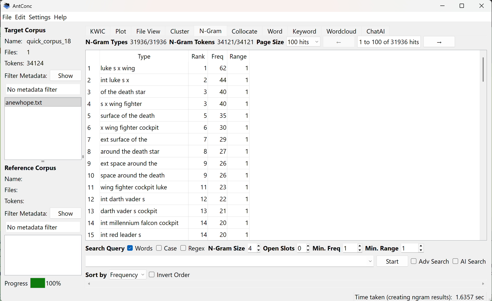
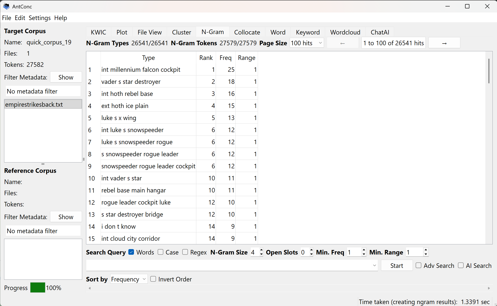
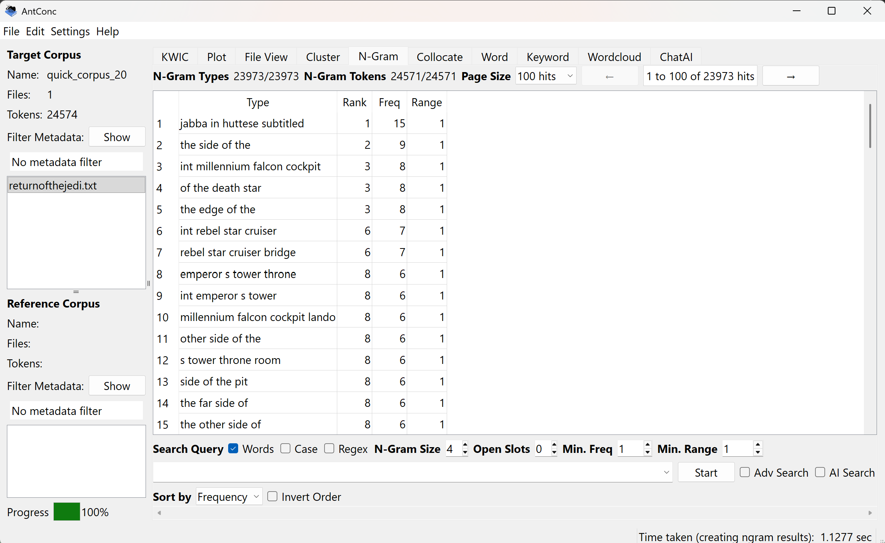
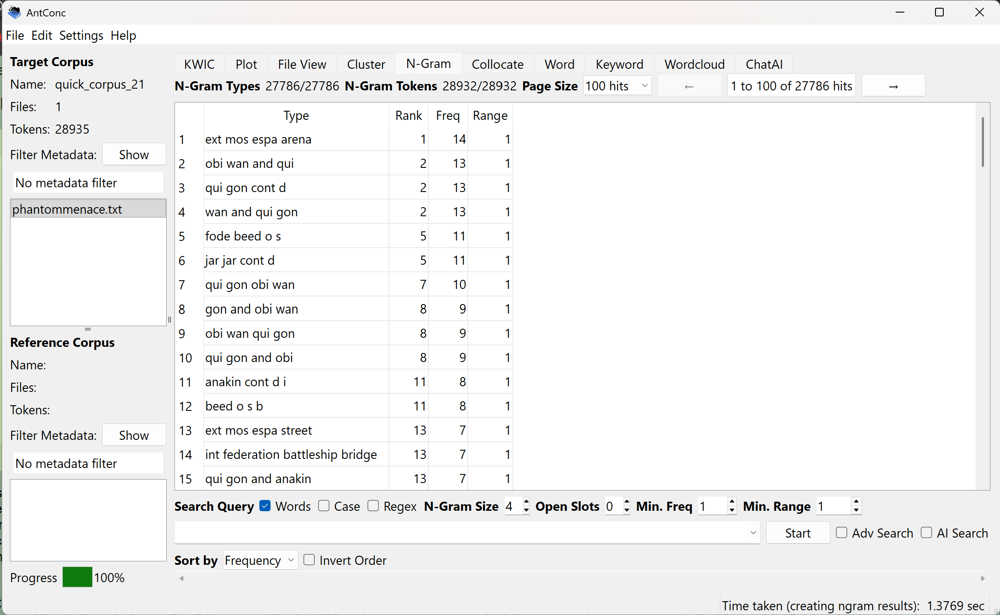
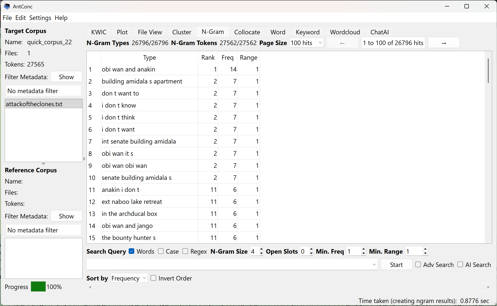
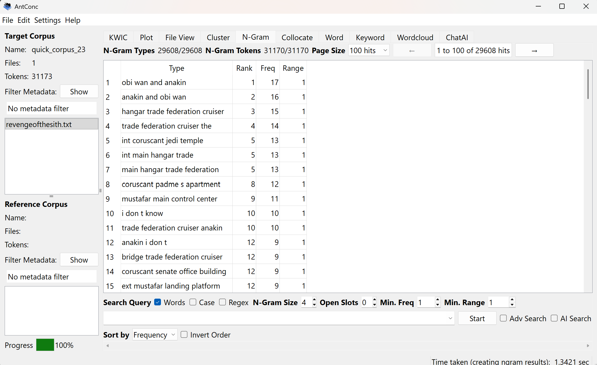
Now with the 4 N-Gram we don't really see anything too notable when they are all split apart. A lot of the same names and locations that we saw in the 3 N-Gram. In some of them you can see the phrase "I don't know" get repeated but you don't see them at the top of all of them so I think we should save that for later. There truly isn't much to say about them all split up so lets instead bring them all together again.
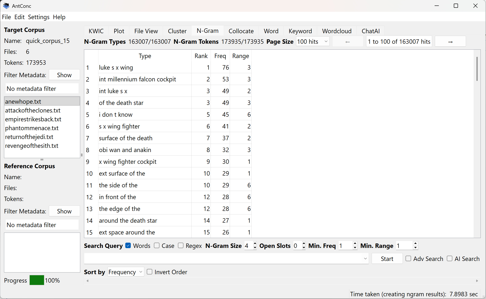
With this now we can see some real data that we can discuss. Like mentioned before we see "I don't know" be on the top of the list now that all of the movies are in the mix. This in one of the few times that we can see actual dialogue get repeated throughout the movies. This does show that in universe that the characters are constantly in a state of unknowingness due to the confusing time that they all live in. But for us this could mean that Goerge never wanted to stop writing his characters to be that way. He wants them to be uncertain because the world he has created has made it so that you couldn't really know what the future may hold.
like what we see with the 3 N-Gram there are new additions to the stage directions. Now we have "the side of the" "the edge of the" and "in front of the." All of these are once again used to describe the locations of different characters and objects. This then does add onto the theory that George did not change the way he would write his stage directions that much. There's obviously differences in the fine details of it all but you can clearly see that he is willing to continue to use the same few phrases over and over again when trying to set the scene.
When setting it to a 5 N-Gram there really was nothing interesting that I could talk about so instead we are going to move onto an entierly different tool being Voyant. This takes all the words used in the texts and turns them into pictures for us to study.
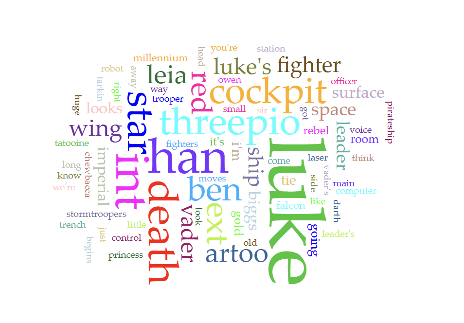
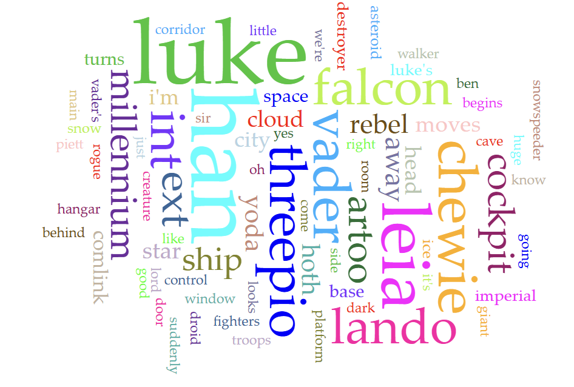
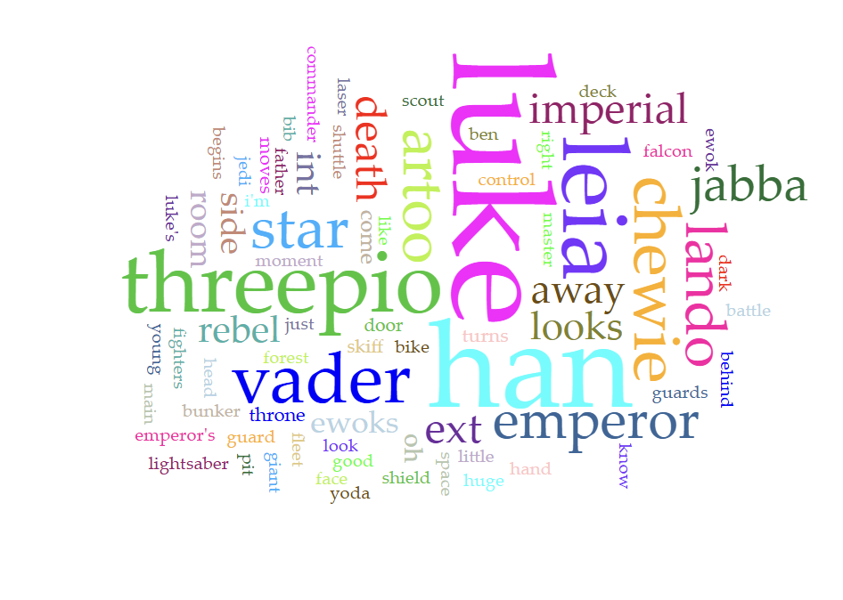
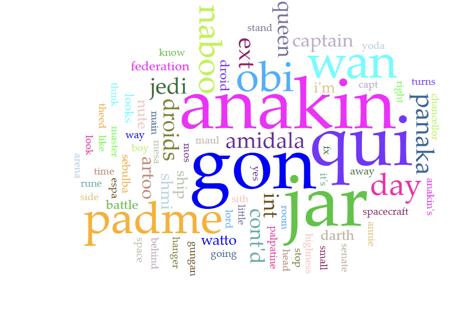
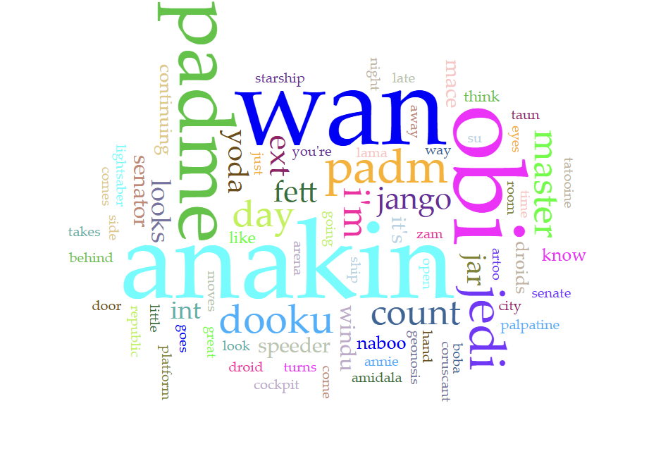
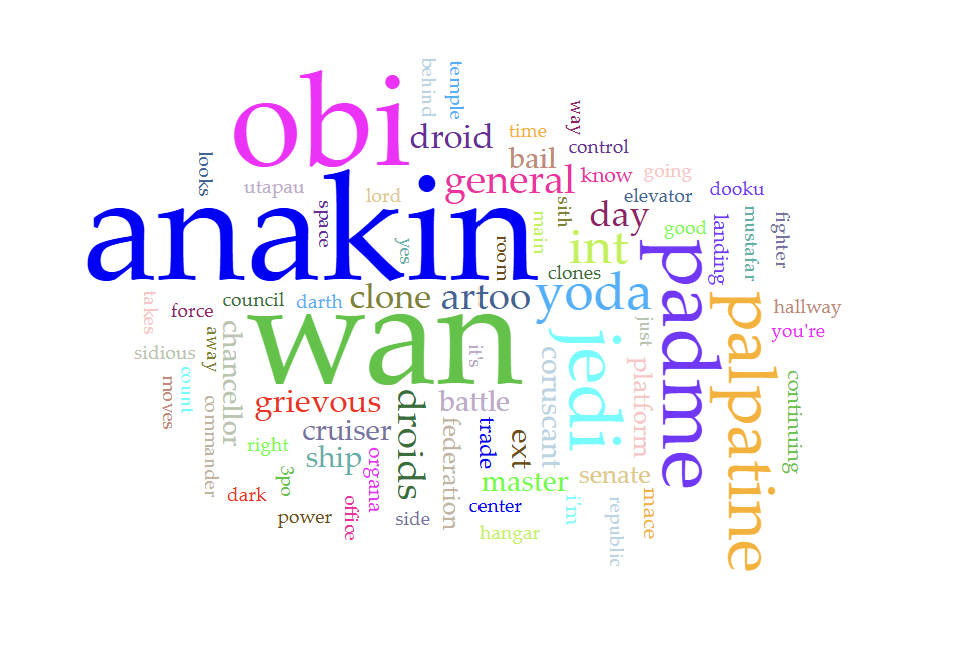
When looking at all the voyant words you can clearly see that it is very heavy on character names. Not just due to dialogue but because since this is a script it needs to say which characters are say what. So from this we can see which characters have the most lines in all of the movies. Some of these might come as a surprise because many iconic characters like Yoda are barely seen in these and C3PO is in every single movie but only seems to have a big role in the Original trilogy.
In general after analysing all of these words in would see that there is not many similarities between them. There are the repeat made up words that you expect to see such as "lightsaber" or "Darth" but not too much of the regular words that you might expect. So this leads me to believe that George did not have a set way in writing his characters dialogue. The complete lack of and repeat words in any of the movies makes me believe that even in the same trilogy he does not write how characters speak the same.
After using the AntConc and Voyant tools to analyze the two Star Wars trilogies written by George Lucus I feel that there are some similarities and differences when it comes to his writing. When it comes to stage directions it is largely the same throughout all six of the movies. Whether it is the reuse of certain phrases throughout all of them or the names that get said over and over again to signal who is talking. All of these point to a similarity to how he goes about setting the scene for the cast and crew to make the movie.
On the other hand I do not believe there is actually any similarities in how he actually wrote dialogue and in the story itself. There was only one instance where a piece of dialogue was said frequently, that being "I don't know." To me I see it as he didn't want the characters to repeat a lot of words and phrases, which is honestly a good thing. I also noticed that George did not really create any sort of iconic ship for the Prequel Trilogy like he did with the Millennium Falcon or with the X Wing. To me the signals a complete shift in the writing between the two trilogies to make the other stand out rather than them feeling the same.